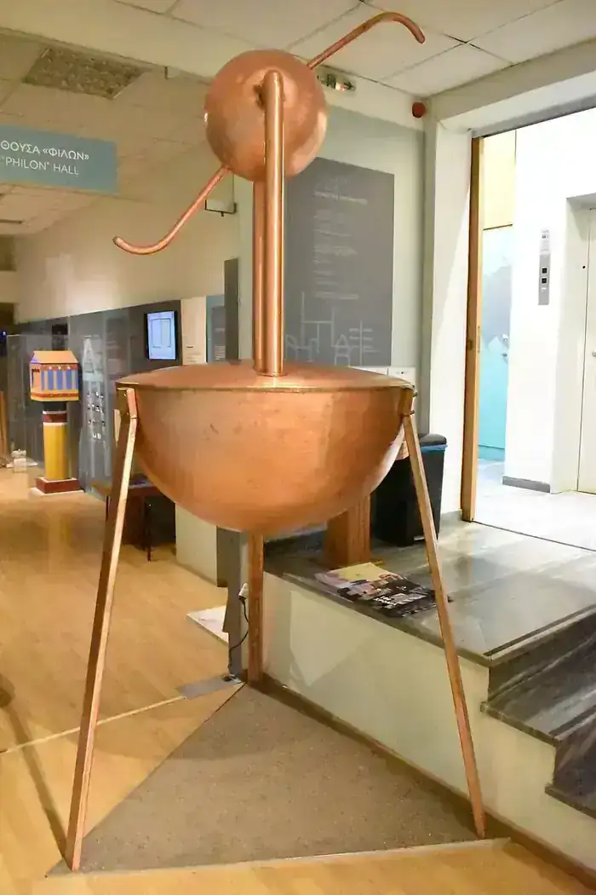

The device
Hero of Alexandria described the aeolipile in the first century AD: a sphere mounted on a pivot, with bent nozzles, heated from below so that steam escapes and spins it. It is the earliest documented steam turbine.
Maps, diagrams and images


The limits
The device was a demonstration, not a power source: it produced little torque, and the ancient world lacked the metallurgy and the economic pressure that made steam power useful. Claims that Hero 'invented the steam engine' overstate a described toy.
The archive files it as documented because the text survives and the device has been rebuilt.
Documented: the description and its date.
Documented: the working principle.
Documented: modern replicas.
Not established: any industrial use.
The label: documented.
Why it is in the archive
Because it is the classic case of a principle discovered without a use, which is a different thing from a technology lost.
Open resources on this topic
- PapersOpen-access articles: DOAJ · PubMed Central · Internet Archive Scholar
- BooksPublic-domain and borrowable copies: Open Library · Project Gutenberg · Google Books · Internet Archive
More images
Cite this page
Momin, S. (2026). Hero's Steam Engine. The Larger World Archive. https://drsamonline.github.io/LARGE_GLOBE/hero-steam-engine.htmlMomin, Sohil. “Hero's Steam Engine.” The Larger World Archive, 2026, https://drsamonline.github.io/LARGE_GLOBE/hero-steam-engine.html.Momin, Sohil. “Hero's Steam Engine.” The Larger World Archive, 2026. https://drsamonline.github.io/LARGE_GLOBE/hero-steam-engine.html.@misc{heros2026hero,
author = {Momin, Sohil},
title = {Hero's Steam Engine},
year = {2026},
howpublished = {The Larger World Archive},
url = {https://drsamonline.github.io/LARGE_GLOBE/hero-steam-engine.html},
note = {Last reviewed 20 November 2026}
}Last reviewed 20 November 2026 · Corrections policy · this page is not peer reviewed
Sources for this page
- Wikipedia, “Aeolipile” — the deviceen.wikipedia.org
- Wikipedia, “Hero of Alexandria” — the engineeren.wikipedia.org
- Wikipedia, “Steam turbine” — the later technologyen.wikipedia.org
- Wikipedia, “History of the steam engine” — the sequenceen.wikipedia.org